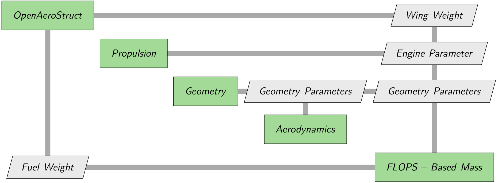

Using Aviary and OpenAeroStruct Together#
This is an example of an external subsystem using the OpenAeroStruct (OAS) structural analysis system to perform aerostructural optimization of a typical large single aisle transport aircraft wing. The subsystem is based on the OpenAeroStruct aerostructural optimization with wingbox example problem.
This example performs a sub-optimization for minimum wing mass that is then used by Aviary. Another use case would be to perform a structural analysis only. Structural design variables would be passed to the subsystem from Aviary and wing mass and a constraint or constraints representing the structural analysis would be passed back to Aviary for use by the top level optimization.
Motivation#
There may be a need for a higher fidelity tool to compute wing mass instead of relying on the empirical methods in core Aviary. A structural analysis external tool is usually used because of an unusual aircraft configuration that may not be predicted by Aviary empirical mass estimation methods, but in this example case it is simply a demonstration of an external capability to compute wing mass.
External Dependencies#
The user must install OpenAeroStruct into their Python environment using the command ‘pip install openaerostruct’. The user must also install the ambiance package using the command ‘pip install ambiance’.
Subsystem Details#
There are two parts to building an external subsystem – the analysis tool and the Aviary external subsystem builder for that tool. The analysis tool takes inputs and parameters from Aviary and return outputs that Aviary can use to override existing variables. The subsystem builder uses the Aviary external subsystem builder template to connect the analysis tool to Aviary as either a pre-mission, mission or post-mission subsystem.
For this case, the analysis tool will compute a wing mass in the pre-mission portion of the Aviary analysis and return its value to Aviary to override the empirical wing mass value.
Fuel mass is passed in from Aviary as the only input currently, but other inputs may also be passed in through the subsystem builder, OAS_wing_mass_builder, by the promotes_inputs parameter.
Other Aviary variables can also be added as additional inputs based on user needs.
Note
Some modifications of the OAS_wing_mass_analysis code will be necessary to add new inputs not already defined.
Here is the builder object for the OAS wing mass analysis example:
# %load ../../examples/external_subsystems/OAS_mass/OAS_wing_mass_builder.py
"""
Builder for an OpenAeroStruct component that computes a new wing mass.
"""
import openmdao.api as om
import aviary.api as av
from aviary.examples.external_subsystems.OAS_mass.OAS_wing_mass_analysis import OAStructures
class OASWingmassBuilder(av.SubsystemBuilder):
def __init__(self, name='wing_mass'):
super().__init__(name)
def build_pre_mission(self, aviary_inputs):
"""
Build an OpenMDAO system for the pre-mission computations of the subsystem.
Returns
-------
pre_mission_sys : openmdao.core.System
An OpenMDAO system containing all computations that need to happen in
the pre-mission part of the Aviary problem. This
includes sizing, design, and other non-mission parameters.
"""
wing_group = om.Group()
wing_group.add_subsystem(
'aerostructures',
OAStructures(
symmetry=True,
wing_weight_ratio=1.0,
S_ref_type='projected',
n_point_masses=1,
num_twist_cp=4,
num_box_cp=51,
),
promotes_inputs=[
('fuel', av.Mission.Summary.FUEL_MASS),
],
promotes_outputs=[('wing_mass', av.Aircraft.Wing.MASS)],
)
return wing_group
Analysis Model Details#
This analysis is based on the Aviary benchmark aircraft_for_bench_FwFm input data representing a typical large single aisle class transport aircraft.
The analysis code OAS_wing_mass_analysis contains the OAStructures class which performs a structural analysis of the wing. The image below shows a simplified XDSM diagram of the pre-mission data flow in this example.

We’ll now discuss this code in more detail.
First, we create a mesh that defines the shape of the wing based on the span, the location of the wing break typical of a transport aircraft, the dihedral and the wing root, wing break, and wing tip chord lengths. The twist of the wing is defined along the span at a set of control points and must be present as it is used in the optimization problem.
We then use this mesh to define a simplified finite element model of the wing structural box. We also define the airfoil shapes as an input to OpenAeroStruct for a given wing thickness to chord ratio (t/c) to represent the wing box thickness. We then set initial values for the wing skin thickness and spar thickness are set, along with material properties and stress allowables for a metal material, typically aluminum. OpenAeroStruct will then calculate aeroelastic loads for a 2.5g maneuver condition and apply those loads to the finite element model of the wing structure.
Results of the structural optimization determine the optimum wing skin thickness, spar cap thickness, wing twist, wing t/c and maneuver angle of attack that satisfies strength constraints while minimizing wing mass. The ‘OAStructures’ class returns the optimized wing mass and the fuel mass burned but currently only the wing mass is used to override the Aviary variable ‘Aircraft.Wing.MASS’.
The OAS_wing_mass_analysis code may be executed in Python to test the OpenAeroStruct analysis outside of the Aviary subsystem interface. Default values for each of the inputs and options are included at the bottom of the analysis code file. This can be a useful test to demonstrate that the OpenAeroStruct analysis model has been properly defined and the model returns reasonable results.
Once the user is satisfied that the results are acceptable, the analysis tool can then be added as an external subsystem and tested in a mission.
Subsystem variables#
A variety of parameters may be defined for an OpenAeroStruct model. These allow the user to control how the aerodynamic and finite element meshes are subdivided, give details about the aerodynamic solution and provide structural material properties and structural scaling factors. The input variables passed in from Aviary may include the fuel mass, reserve fuel mass, airfoil description, engine mass and its location, lift and drag coefficients and the cruise conditions of Mach, altitude, thrust-specific fuel consumption (SFC) and range.
This is a list of the available options defined for the structural analysis:
derivs_method
use_jit
default_shape
symmetry
chord_cos_spacing
span_cos_spacing
num_box_cp
num_twist_cp
S_ref_type
fem_model_type
with_viscous
with_wave
k_lam
c_max_t
E
G
yield
mrho
strength_factor_for_upper_skin
wing_weight_ratio
exact_failure_constraint
struct_weight_relief
distributed_fuel_weight
n_point_masses
fuel_density
This is a list of the inputs defined for the structural analysis:
box_upper_x
box_lower_x
box_upper_y
box_lower_y
twist_cp
spar_thickness_cp
skin_thickness_cp
t_over_c_cp
airfoil_t_over_c
fuel
fuel_reserve
CL0
CD0
cruise_Mach
cruise_altitude
cruise_range
cruise_SFC
engine_mass
engine_location
The 2 outputs from the analysis tool are:
wing_mass
fuel_burn
See OAS_wing_mass_analysis and the OpenAeroStruct aerostructural optimization with wingbox documentation for descriptions of these variables.
Test Case#
A simple Aviary mission is defined to test the inclusion of the OpenAeroStruct wing mass subsystem during the pre-mission phase. The test mission is defined in run_simple_OAS_mission and is a mission based on input data read from the benchmark data file aircraft_for_bench_FwFm.
The OpenAeroStruct subsystem is used to compute an optimum wing mass which will override the Aviary computed wing mass value.
The value of the Aviary variable Aircraft.Wing.MASS is printed at the conclusion of the mission to verify that the wing mass from the subsystem is overriding the Aviary computed wing mass.
Wing mass optimization of this type usually does not have knowledge of non-optimum wing mass values such as leading and training edge structure, actuators, stiffeners, etc.
The optimum wing mass computed by the OAStructures class can be scaled using the option wing_weight_ratio to better match either the Aviary empirical wing mass value or a known fly-away mass estimate for your wing model.
One method to determine the wing_weight_ratio would be to run the mission to calculate the Aviary empirical wing mass and then run OAS_wing_mass_analysis by itself using its default input values and compare wing masss. The wing_weight_ratio value may then be set to calibrate the OpenAeroStruct wing mass to the expected fly-away mass.
This calibration step has already been performed for this model, so the user may run the simple mission with or without the OpenAeroStruct subsystem active and compare the results.